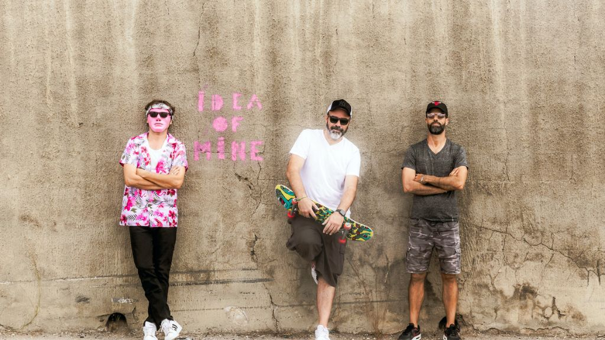

RedLight Revisit Obession, Guitars, and Grit With One Eye on the Future

The following feature is now included in our online magazine which is also available in print.
Issue #9
Online Magazine | Print MagazineThere is a certain obstinacy at play with RedLight, the Marseille rock group who have been operating away from the beaten tracks for the better part of the last two decades. “A James Bond Complex,” released back in 2015, still packs the punch of a well-edited scene shift. The track is all wrapped up in the fevered romance of a spy movie, with lead vocals that are as tight as the verses are and a beat that positively lurches like a midnight stroll through the city. Its place within the indie rock movement of its era is secured, but the less said about its production, the better.
While always pointing to touchstones such as The Cure, Pixies, and pre-EMP Strokes, the brilliance of RedLight is in how they’ve absorbed such influences without aping them. There’s a subtlety of guitars, an expansiveness behind the rhythms, and a commitment to songcraft that’s richly repayable on further listens. Anyone enamored of the quieter side of Pearl Jam or the harmonically complex tug-and-push of latter Beatles will find such impulses here.
This mindset continues on through their latest iteration, where they are now finalizing their single Idea of Mine and an album set to come out in early 2025. Everything they do is a full-on DIY aesthetic that keeps their sound down to earth and reminiscent of a rehearsal space rather than a recording studio. It is an honesty that is much like a good French crime thriller - think Jean-Pierre Melville rather than blockbuster action.
RedLight are still a late-night band to listen to, perhaps after an evening of re-watching retro spy flicks or listening to TV's *Marquee Moon*. They’re not seeking to capitalize on trends but hone their sound, which still has so much to impart.
This dispatch was last updated on December 26, 2025